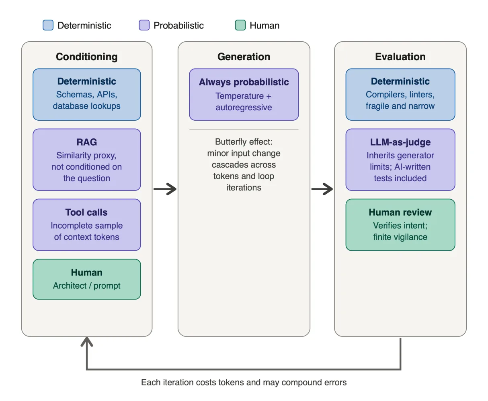

An engineer running an agentic loop is uncomfortably close to a gambler at a slot machine: pulling the handle, watching it fail, pulling again, and eventually pressing autoplay, leaving the machine to drain the account while they sleep.
Agentic development is genuinely useful, and the pipeline of the agentic loop has been used successfully by many previous methods: condition what the model sees, generate output, evaluate the result. What has changed is that AI now controls the iteration, and what is underpriced is the assumption that self-correction is cheap, reliable, and scales to hard problems. The cost of retrying compounds, and in domains where the model's error rate is high to begin with, more loops can make things worse, not better.
Below is a taxonomy of the agentic loop components and the compounding costs of getting the answer wrong.

Conditioning: What the Model Sees
Deterministic context
Context constructed from explicit schemas, database lookups, or API calls with repeatable outputs. But deterministic context is fragile: it only works for what was explicitly anticipated. As data distributions shift, hand-coded rules break quietly: a different filename, a new file format, a schema change, and the expected content simply isn't added to the context and the model just proceeds without it.
Probabilistic context (RAG and agentic tool calls)
There are two common forms of probabilistic context. A fast method, retrieval augmented generation (RAG), retrieves document chunks by a proxy that is independent of the actual question being answered. There is no mechanism to verify whether those chunks contain what is actually required, or whether anything in the index does.
The similarity score answers "does this look like the query" not "does this contain what the model needs."
A slower method is agentic tool-call sampling: the model explores the environment by emitting tokens to run grep on a codebase, call an API, or read a file, and decides what to retrieve next based on what it has seen so far. This is a sampling problem. Each tool call is based on a token generated by the agentic model, and this model has no way to know whether its sample is complete. In a large codebase, the model may grep for a function name, find one definition, and miss three others in different modules.
It proceeds as if its context is sufficient. It frequently isn't.
Human context
A person writes the goal, selects the documents, frames the constraints. The underlying act is the same as it has always been: a human making deterministic choices about what the model sees, the most reliable way to shape the output. The brilliance of AI coding is that specifications can be vague and yet the results useful; the risk is that the same vagueness lets the model fill gaps with its own parameters, and the results become garbage with equal confidence.
Generation
Generation is non-deterministic. There are two sources of variance: sampling temperature, which is intentional, and the autoregressive structure of generation itself, where each token is conditioned on all prior tokens.
In a loop that feeds outputs back as inputs, a trailing space can trigger the equivalent of the Butterfly Effect: minor changes resulting in completely different outcomes millions of agentic loop tokens later.
LLMs produce outputs that correlate with correct answers in well-represented domains. Outside those domains, outputs frequently become fluent confabulations that look correct without being so.
Evaluation: Checking the Output
Deterministic evaluation
Compilers, linters, static analysers, profilers, and standards validators. These catch simple, well-specified concepts like syntax errors and type violations, and nothing else. Repeatable, but fragile: they don't verify intent, and in high-assurance domains are hard to specify correctly without the specialist knowledge the model also lacks.
Probabilistic evaluation (LLM-as-judge)
An LLM-as-judge inherits the generator's limitations and approves output that matches surface patterns of correctness without verifying the underlying property.
A model grading its own cryptographic code as correct because it looks like cryptographic code, or declaring it secure because it addresses a vulnerability from 2005 while remaining unaware of one from 2026.
AI-written unit tests and smoke tests belong here too, as indirect LLM evaluation. The tests may pass deterministically once written, but the test suite itself was sampled nonetheless. A model that can't generate a correct implementation is quite likely to generate a test that wouldn't catch the error.
Human evaluation
A person reads the output, runs it, or writes the tests themselves. Previously called human-in-the-loop, now folded into the architect role. The only evaluator that can verify intent rather than surface patterns, and the only one that doesn't inherit the model's distributional limits. Also the most expensive, and has only a finite amount of vigilance before becoming a failure mode itself.
Cost
Model cost
Model costs in agentic loops are brutal.
At best, the success rate of a task follows a simple formula:
success rate = 1 − (error rate per attempt)^attempts
A 20% error rate needs fewer than 2 attempts for 95% chance of success; a 50% error rate needs over 4. Small increases in error rate require large increases in attempts, and each attempt costs tokens across generate, evaluate, and regenerate.
Reality is much worse. The formula assumes independent attempts. They are not: the innate similarity of the input produces correlated errors across attempts, and when the model sees its own failed output, errors repeat more strongly still.
Artificial Analysis measured this across the Anthropic family. Fable 5 scores 60 on their Intelligence Index using 87M tokens; Opus 4.8 scores 56 using 120M; Sonnet 4.6 scores 47 using 200M. Sonnet burns 2.3x Fable's tokens and scores 13 points lower. On intelligence per million output tokens: Fable 0.69, Opus 0.47, Sonnet 0.24. More attempts cannot close that gap.
The cheaper model is not cheaper on a quality-adjusted basis and cannot recover through volume or looping iterations.
The finances of agentic loops
Total cost is the cost of generation plus the cost of building and maintaining the harness around it, compounding across every loop iteration. Agentic harnesses sample a different portion of the codebase on each pass, so an iteration may fix one failure while introducing another rather than converging on a resolution.
The automatic nature of looping also makes spend unpredictable. Normal planning estimates effort and calculates an ROI. An agentic loop has no equivalent mechanism: nothing inside the loop compares the cost of another iteration to the value of getting it right, so the run continues until an external limit, a budget cap, a timeout, an engineer checking in, cuts it off.
For organizations planning agentic spend, the agentic loop is unlikely to relieve pressure on the P&L.
Postscript: One of my largest agentic loop runs took almost 19 hours and processed 40 million tokens with Claude Opus 4.8, iterating through a massive backend and frontend harness and linters. At the end, it became clear that every git-tree and every loop iteration had been trying to solve a problem introduced in the initial setup of the loop. The only reason the run stopped was that the model, despite the harness designed to catch test hacking, found a different exit: it marked every feature as deferred to a future release, which allowed it to declare all tests as passed.